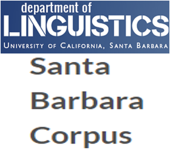

Overview
A multilayer corpus for research on discourse models
GUM is an open source multilayer corpus of richly annotated texts from twelve text types. Annotations include:
- Multiple POS tags, morphological features and lemmatization
- Sentence segmentation and rough speech act
- Document structure in TEI XML (paragraphs, headings, figures, etc.)
- Normalized ISO date/time annotations
- Speaker and addressee information (where relevant)
- Constituent and (enhanced) Universal Dependencies syntax
- Information status (given, accessible, new, split antecedent)
- Entity and coreference annotation, including bridging anaphora
- Entity linking (Wikification)
- Discourse parses in Rhetorical Structure Theory and discourse dependencies
The corpus is collected and expanded by students as part of the curriculum in LING-367 Computational Corpus Linguistics at Georgetown University. Each year students begin by choosing a text from within one of four possible genres, and as we learn about different annotation types and standards, participants are responsible for analyzing their own document, to which they add more and more layers of analysis: from part-of-speech tagging, through treebanking, entity recognition, discourse parsing, and more. Texts are chosen from openly available sources, and students who wish to contribute their analyses at the end of semester can do so under a Creative Commons license. The resulting data is checked for consistency and published online via GitHub. See this page for a list of contributors.
Text types and sources
Genre, modality, intended recipients, background knowledge and communicative intent all influence how we use language extensively. The selection of text types in GUM is meant to represent different communicative settings, while coming from sources that are readily and openly available, so that new texts can be annotated and published with ease, without restrictive licenses and free of charge. In order to support a collaborative environment, each year we work on texts from four genres, creating small groups of students conducting research on one type of texts, which can be compared with three others within the classroom. Every three years, we change genres and select four new types of data to work on. The GUM corpus currently contains the following proportions of texts:
| Text type | Source | Documents | Tokens | |
|---|---|---|---|---|
| Interviews | Wikinews | 19 | 18,189 | |
| News stories | Wikinews | 23 | 16,140 | |
| Travel guides | Wikivoyage | 18 | 16,513 | |
| How-to guides | wikiHow | 19 | 17,085 | |
| Academic writing | Various | 18 | 17,168 | |
| Biographies | Wikipedia | 20 | 18,209 | |
| Fiction | Various | 19 | 17,508 | |
| Forum discussions | 18 | 16,364 | ||
| Conversations | UCSB Corpus |  | 9 | 10,451 |
| Political speeches | Various | 10 | 10,827 | |
| CC Vlogs | YouTube | 10 | 11,200 | |
| Textbooks | OpenStax | 10 | 11,190 | |
| Total | 193 | 180,844 |